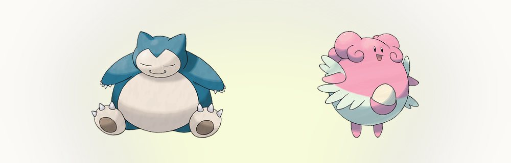

長いヌズロックを落とした人に「どう終わった?」と聞くと、たいてい「穴」の話が返ってきます。こおりに弱いのが4匹。いわで落ちるのが3匹。負けは1回の事故で決まるのではなく、数えていなかった弱点が2回目で数えられた瞬間に決まるのです。そして穴の話の残り半分はエンカウントです。ゲームが何を渡してくるかで、埋められる穴の数が変わるからです。この記事はその両方を、当サイトのツールと同じ1,025種のデータを使ったシミュレーションで測ります。
エンカウントの計算が測っているもの
まず方法から。残りの数字を信じてもらうためです。シミュレーションはデータセット全体、つまり1,025種とその別フォルムからポケモンを一様に引いて、1つのことだけを追いかけます。その1匹がパーティのタイプ範囲に何をもたらすか、です。ここでの範囲とは1つの意味しかありません。パーティのタイプ一致技が、18タイプのうち何タイプに2倍以上を通せるか。種族値や技構成、レベル帯は一切見ていませんし、ルートごとに調整された出現テーブルでもありません。これが実はとても大きな違いになります。
先に書いておくべき限界が1つあります。図鑑全体からの一様な抽選は、実際のどのルートよりもずっと優しいのです。本編は小さな地元のテーブルから配ります。そして同じ種が重なる苦しさのほとんどは、運の悪さではなく、そのテーブルの小ささから生まれます。ですから最初の数字は「最高の場合」、全国図鑑レベルの多様性が買えるものとして読んでください。重複のパートは、現実がそこに加える補正の話です。
カバレッジの曲線：1匹ごとに何が増えるか
まず上限から。1匹で18タイプのうち9つを超えてカバーできるポケモンは存在しません。かくとう/こおりのケケンカニと、こおり/じめんのマンムー系が、図鑑全体で最も広い攻撃範囲で並びます。そこから下は一気に落ちます。ランダムに1匹だけ引いた場合、カバーできるのは平均4タイプほど。意味はあるけれど、頼りにするには足りません。面白くなるのは、これが積み重なってからです。
| 捕獲数 | カバーできるタイプ(平均) | 直前の1匹で増えた数 |
|---|---|---|
| 1 | 4.1 | — |
| 2 | 7.0 | +2.9 |
| 3 | 9.3 | +2.3 |
| 4 | 11.0 | +1.7 |
| 6 | 13.4 | +1.1 |
| 9 | 15.4 | +0.6 |
| 12 | 16.4 | +0.3 |
曲線は前半に集中させるほど得をする形に曲がります。最初の3匹でタイプ表の半分(18のうち9.3)を超え、6匹目あたりで13〜14に届きます。うっかりできた穴のほとんどに名前がつく地点です。そこから先は、1匹増やしても1タイプも増えません。12匹目で平均0.3タイプほど。残った2つの空白がしぶとい理由は、知っておく価値があります。
どこが残りやすいかは、タイプ表がどう作られたかを物語っています。12匹そろえたシミュレーションでも、でんきへの打点がない確率は41%、ノーマルへの打点がない確率は35%あります。でんきに2倍を取るにはじめん技が要り、ノーマルに2倍を取るにはかくとう技が要る。そして信頼できるじめん・かくとうのタイプ一致技は、どこにでもあるわけではありません。10ルート回してもこの2つの穴が開いたままなら、それは運が悪いのではありません。表がそういう表なのです。
全部のタイプをそろえるのも、思われているよりずっと珍しいままです。12匹そろえて18タイプすべてをカバーできるのは約5回に1回(18%)。コイン投げになるのは20匹そろえてから(53%)です。序盤を過ぎてから足りない2タイプをエンカウントで追うのは、勝ち目の薄い作戦です。この曲線が言っているのは、勝負は最初の6匹で決まるということです。
同じ表をゆっくり読むならこうです。カバレッジはまとめてやってきます。平均的な1匹目で18タイプのうち4つが入り、最後の2つは十数匹かかっても現れないことがあります。序盤のほのお・みず・くさという定番の背骨は、この曲線の急な部分を意図的に買うための構成です。広く攻められる3匹で、最初のジムの前にタイプ表の半分です。
重複スキップのコスト計算
重複スキップ(すでに捕まえた種なら、そのエンカウントを飛ばしてよいというルール)は、この遊び方で最も議論になるローカルルールです。計算してみると、両方の言い分が正しいことがわかります。全国図鑑スケールでは、重複はほぼ起きません。6匹捕まえたあと、7匹目が一様ランダムで既存種と重なる確率はわずか0.44%。200回に1回です。ルートがそう動くなら、誰もこのルールを必要としません。
ところがルートは全国図鑑から配りません。小さな地元のテーブルから配ります。中盤のルートなら10〜12種、古い作品ならもっと少ないことも。12種のルートだと、最初の3匹に重複が混ざる確率がすでに24%、6匹目までに78%になります。8種のルート(序盤の小さな洞窟を思い浮かべてください)なら、3匹目で34%、6匹目で92%です。このルールが必要なのは、ルートのテーブルが小さいからで、サイコロが意地悪だからではありません。
実用的な読み方は2つ。1つ目、重複の扱いはルート1の前に決めて書き留めておくこと。痛い目を見てから決めるのでは遅いのです。この数字なら、必ず痛い目を見ます。2つ目、このルールの価値が最大になるのは、いちばん面倒に感じる場面です。小さなテーブルは本当に枯れるプールで、重複を新しい選択肢に置き換えるのは難易度設定ではなくテンポの調整です。
二次的な効果もあります。このルールは曲線を守ってくれます。エンカウント枠を食う重複は、定義上なにも新しく足しません。同じ種、同じタイプです。だから飛ばすことは、死んだ枠を新しい抽選に変えることになり、曲線が最も欲しがる序盤の急な部分にちょうど効きます。
代わりの1匹を引くとき
仲間が倒れたとき、代わりの抽選は新しいスタートのように感じます。数字はその感覚に待ったをかけます。2万パーティをシミュレーションしました。ランダムな5匹に6匹目を足し、実際に何が変わったかを測ります。新人が増やすタイプは平均1.03。およそ1つです。そして42.5%のケースでは、まったく増えません。代わりの5回に2回は、パーティの攻撃的な形を何も変えないのです。

守りの側はもっと露骨です。78.5%のシミュレーションで、新入りは既存の5匹のうち2匹以上がすでに共有している弱点と同じタイプに弱い。ランダムな代役は穴を埋めません。むしろ一番近い穴のまわりに合流します。何を足すかの分布も同じことを言っています。新しいタイプをちょうど1つ足すのが27%、2つが19%、3つ以上を足すのは10.6%だけで、そこに当たったときこそ、その1匹を軸に組む価値があります。
だからといって、抽選をやめろという話ではありません。狙って引けという話です。代わりを捕まえに行く前に、どの穴を埋めたいのかを決めておく。外れたらボックスが1匹深くなっただけで、旅は続きます。組み合わせを先に確かめたいなら、 ヌズロック編成 がパーティを引いて、この計算の土台になっているのと同じカバレッジレポートを出してくれます。
数字が支持する5つのルール
途中で下す判断に落とし込むと、こうなります。
- 序盤に集中させる。最初の3匹は、次の9匹を合わせたよりタイプ表を広げます。序盤のルートはパーティの埋め草ではなく土台だと考えてください。
- 18タイプを追わない。全部そろうのは20匹でコイン投げです。12匹目は、耐久や補助、あるいは本当に怖いタイプに使ったほうがだいたい得です。
- 重複のルールは早めに書き留める。よくある中盤ルートでは、重複なしで6匹そろうのは5回に1回。来る前に備えておきましょう。
- 代役は穴に向ける。ランダムな代わりの5回に2回はカバレッジを1つも足さず、5回に4回はすでにある共有弱点に加わります。隙間を狙って選ぶか、何も変わらなくても構わないと覚悟するかです。
- 共有弱点は資源として数える。平均的な6匹は、18の攻撃タイプのうち7.5で弱点の重なりを持ちます。新しい1匹は、その数字を狭めるか、増やすかのどちらかです。